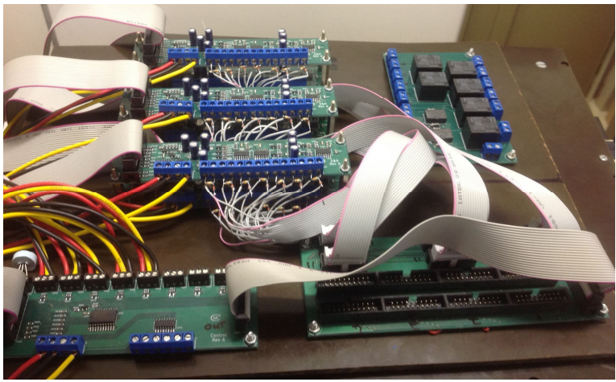
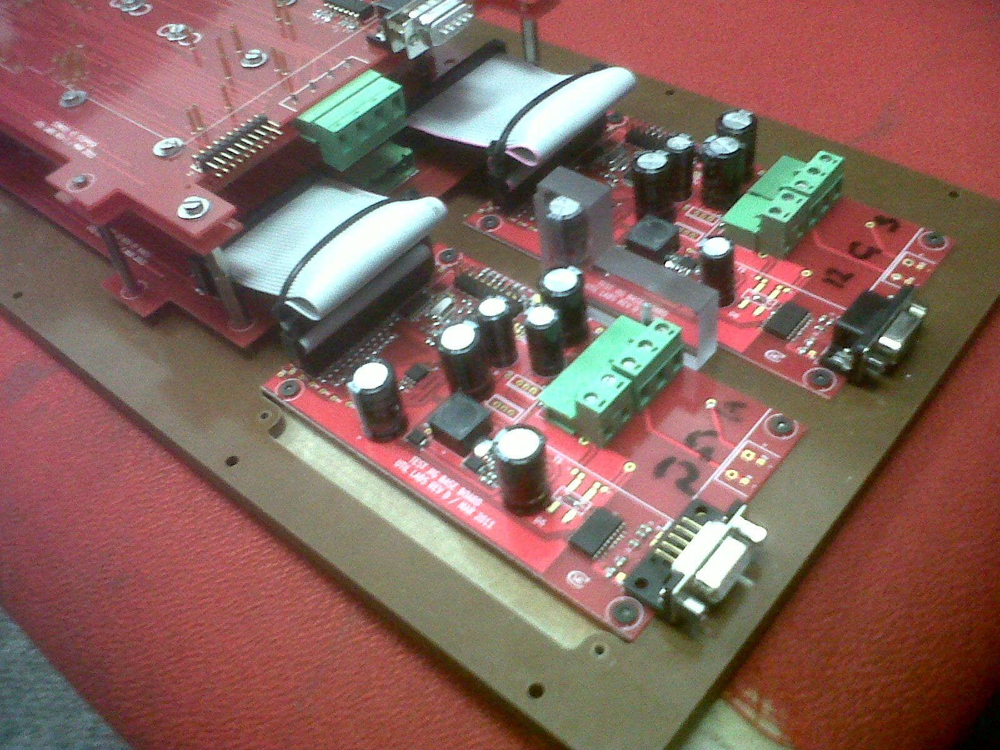
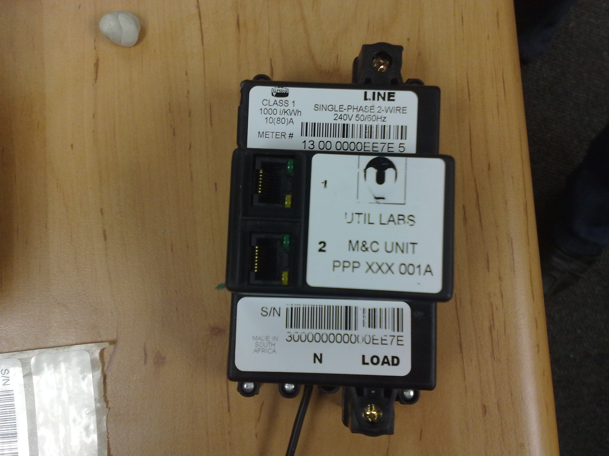

I have spent many years creating hardware solutions in both industry and academia and this is a selection of projects I have worked on.

During my master's degree I developed a system that allowed me to do reliability tests of a variety of high volume manufacturing test probe receptacle interfaces by developing a custom environmental stress chamber and a custom test system to run it and collect data.

While working at Util Labs I was also studying part time towards my BTech degree. As I was in charge of the electronic engineering component of the test fixtures for our high speed manufacturing line, I used the generic test fixture system that I had designed as the basis for my 4th year project. I won the SAIEE National Student Project Awards 1st place award for this project.

While working at Util Labs I was also studying part time towards my second engineering diploma. At that point I was one of the design engineers, and I used the design for the electricity meter with integrated contactor and power line communication system that I was working on as the basis for my final year project.